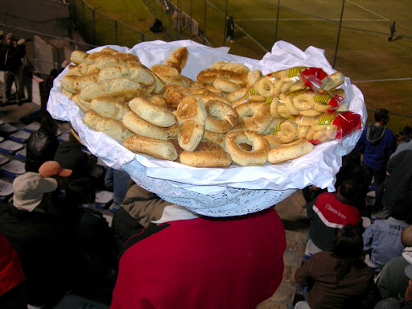
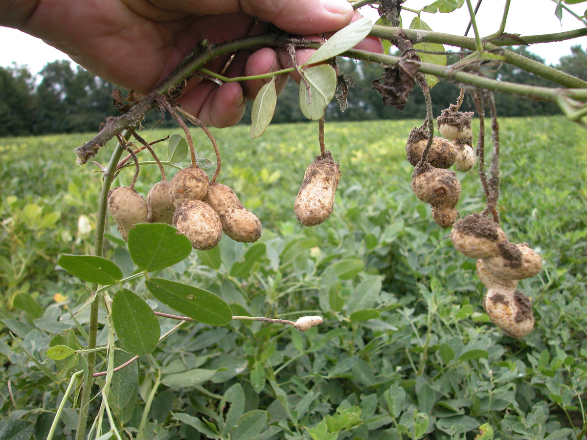
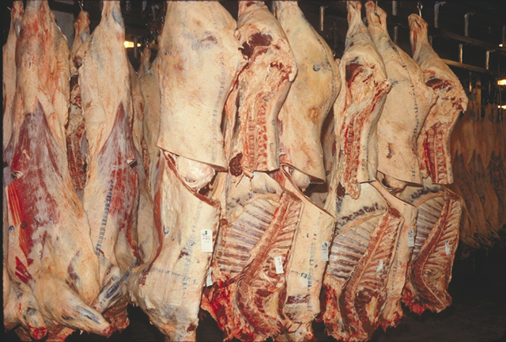
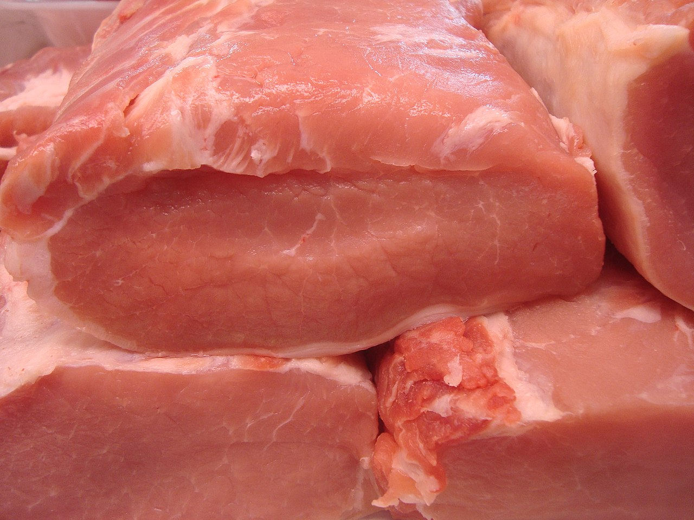
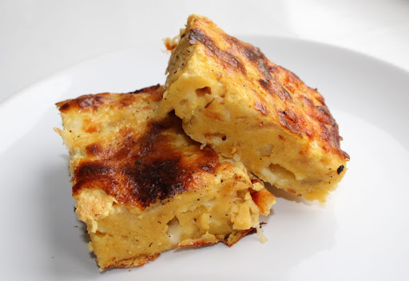
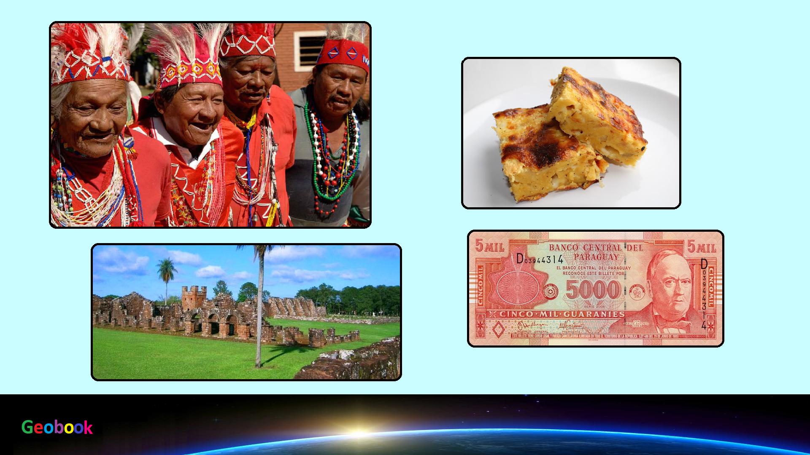

____
Традиционная еда
Чипа — небольшие печёные булочки из тапиоковой или кукурузной крупы с сыром, популярная закуска и завтрак в Парагвае и на северо-востоке Аргентины.

Арахис — растение; вид рода Арахис семейства Бобовые (Fabaceae), важная сельскохозяйственная культура, возделываемая в промышленных масштабах ради плодов — арахисовых «орехов».
Распространённое русское название растения «земляной орех» не народное, оно попало в русский язык как калька из иностранных языков. С точки зрения ботаники называть арахис орехом неправильно. Он является бобовой травой.

Говядина — мясо домашних коров и быков (волов). Мясо молодняка называется телятина. В западноевропейской кулинарии строго различают мясо коров, быков и волов.

Свинина — кулинарное и промышленное наименование мяса свиней. Самый потребляемый вид мяса в мире.

Парагвайский суп — национальное блюдо Парагвая. Результат симбиоза культур индейцев Гуарани и переселенцев из Испании. В рацион индейцев входили несколько блюд, основным ингредиентом которых были: кукурузная мука и мука из маниоки.

____
